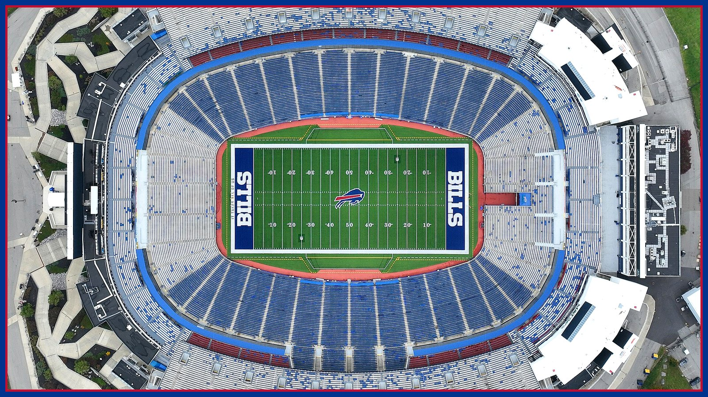

Game day starts here: your Ravens-week ticket guide
Where to sit, when to buy, and what the new-stadium market is doing to prices for Ravens at Bills on Sunday, Nov. 1 — your complete game-week ticket game plan.

This article is a paid promotion. Sunday, Nov. 1 at 1 PM ET, the Ravens come to Highmark Stadium, the Bills come off their bye at 5-1, and if you're reading this without a ticket in hand, you are officially in the part of the week where a plan beats a panic. Here's the game plan.
First, the market reality. A 5-1 home team, a marquee opponent, and a fan base that treats late-October football like a religious obligation means prices on the secondary market move with the news cycle. Lamar Jackson's status is the single biggest price lever of the week: clarity about Baltimore's quarterback — either way — tends to firm prices up, so the cheapest window of the week is usually during the uncertainty, not after it resolves. If you have a price you're comfortable with, don't get cute waiting for a collapse that a national TV slot rarely delivers.
Second, where to sit. For a first game, the lower bowl between the 20s is the dream and prices like it. The value sweet spot for most fans is the upper deck's first several rows — you get the full-field view that actually teaches you the game, the crowd energy is unmatched, and your wallet survives the trip. End zone seats are the loudest ride in the building; just know the play moves away from you for a quarter at a time. And wherever you sit, check the listing for aisle and row details before you buy — in a sold-out building, two seats can share a section and not share an experience.
Third, buy verified. Use a marketplace that guarantees your ticket and your entry — price-shopping across the screenshot economy is how Sundays get ruined in the parking lot. Compare the all-in price, fees included, not the headline number, and screenshot your confirmation before you leave the house. If you're buying for a group, one person buys all the seats in a single order; split orders are how best friends end up in different time zones of the stadium.
Fourth, think past this Sunday. The new stadium era is reshaping what a Bills ticket means — demand is only moving one direction, and the fans who build a routine now (verified accounts ready, price alerts set, group chat organized) are the ones who never miss a game they wanted to see. Treat Ravens week like a rehearsal for January, because if this team does what we think it's about to do, January is coming to Orchard Park.
However you get in — lower bowl, upper deck, or the last row under the lights — get in. A 5-1 team, a returning MVP storyline, and a Sunday afternoon at Highmark is the good stuff. We'll see you there. Go Bills.